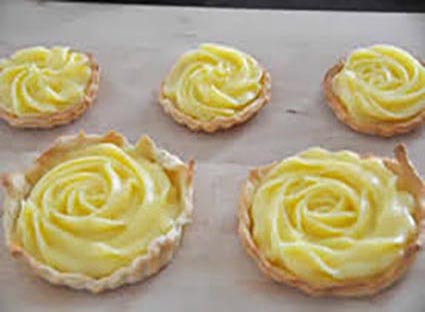

La recette

Préparation : 20 mn
Ingrédients
- 25 cl de lait
- 2 jaune d’œuf
- 50 gr de sucre
- 25 gr de farine
- 1 gousse de vanille
Recette
- Chauffer le lait et la vanille pour le faire bouilli
- Battre les jaunes d’œufs avec le sucre puis ajouter la farine
- Verser le lait bouillant sur le mélange tout en mélangeant bien
- Remettre la casserole sur le feu, faire épaissir en remuant très soigneusement pendant 10 mn.
|